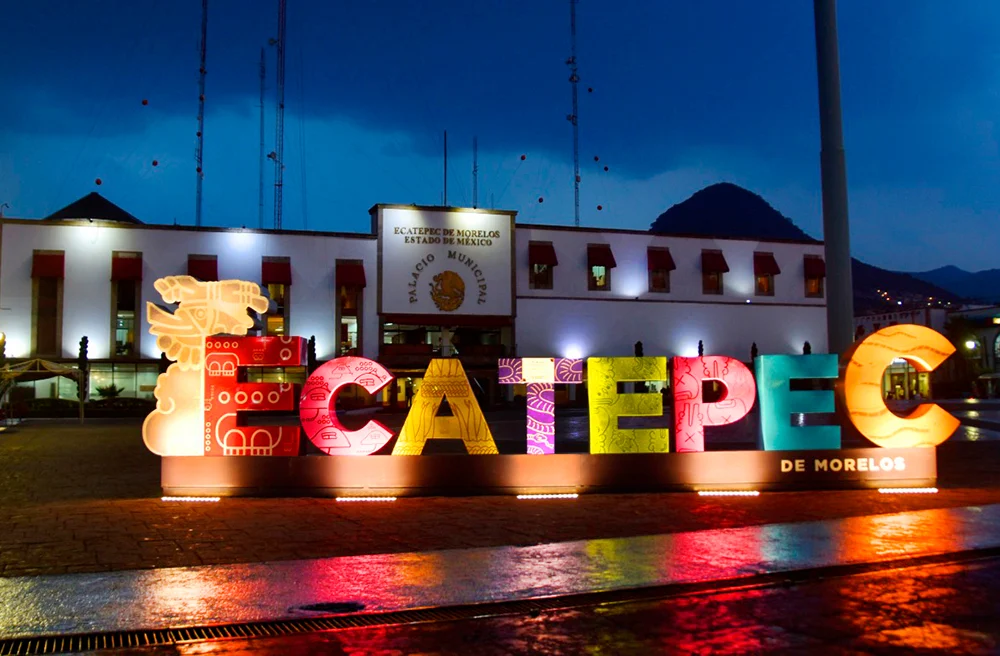

Nos complace recibirles en este espacio dedicado a la gestión y vigilancia del agua en nuestro municipio de Ecatepec de Morelos.
Situado en el Estado de México, Ecatepec es una de las localidades más grandes y pobladas del país, con más de 1.6 millones de habitantes distribuidos en una superficie de 160 km². Esta densidad poblacional presenta grandes desafíos, especialmente en la administración y conservación del agua.
En la Contraloría de Ecatepec, nuestra misión es asegurar una gestión transparente y sostenible del agua, un recurso vital para nuestra comunidad. Actualmente, Ecatepec cuenta con más de 200 pozos de agua potable y una compleja red de distribución que abastece a miles de hogares diariamente. Sin embargo, enfrentamos problemas significativos como la sobreexplotación de acuíferos, fugas en la infraestructura y desigualdades en el suministro de agua.
A través de este portal, invitamos a todos los ciudadanos a participar activamente en la vigilancia y mejora de nuestros recursos hídricos. Aquí encontrarán información sobre el estado del agua en Ecatepec, reportes de calidad, estadísticas actualizadas y canales de comunicación para reportar problemas y sugerencias.
Juntos, podemos construir una comunidad más consciente y responsable en el uso y conservación del agua.
Gracias por su visita y su compromiso con la sostenibilidad de nuestro municipio.
